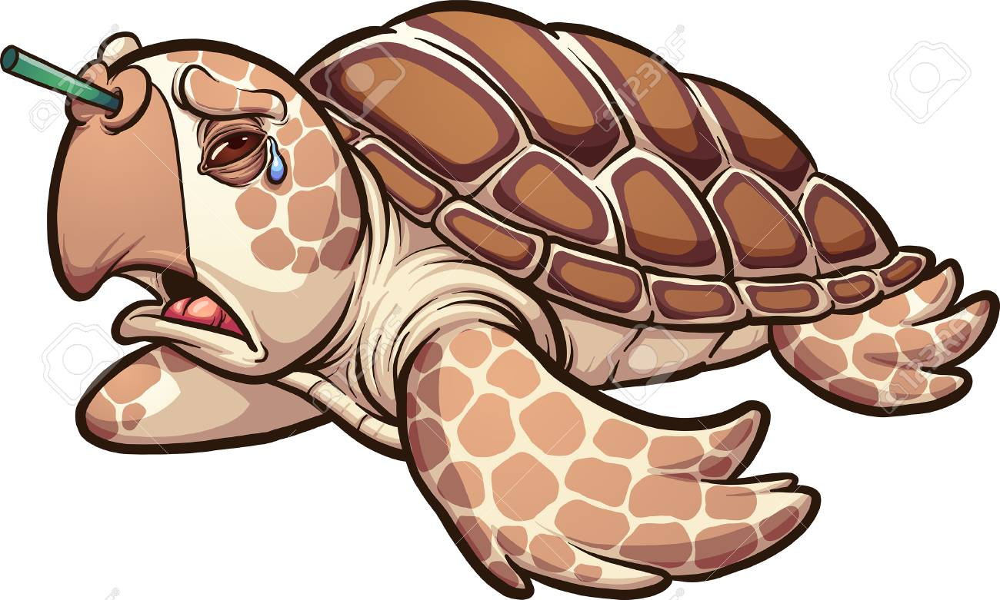
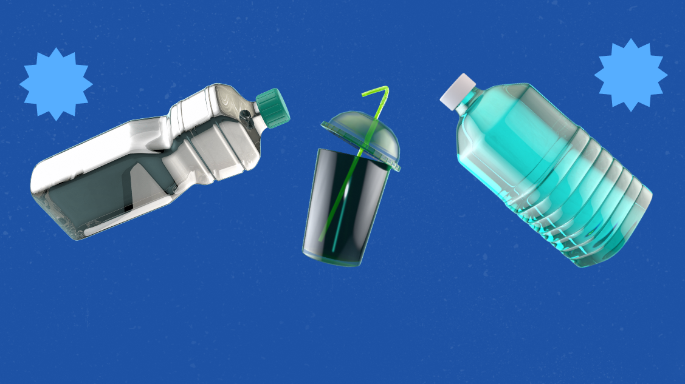

Os resíduos plásticos são um problema ambiental significativo que afeta os ecossistemas em todo o mundo.
A produção global de plástico atingiu 367 milhões de toneladas métricas anualmente, contribuindo fortemente para a geração de resíduos.
Os resíduos plásticos nos oceanos representam uma grave ameaça à vida marinha, causando ingestão, emaranhamento e destruição do habitat.
Nosso objetivo é reduzir os resíduos plasticos e melhorar a sustentabilidade do meio ambiente.
Além de:
Reduzir a poluição ambiental: Diminuir a quantidade de plástico descartado incorretamente, que polui solos, rios e oceanos.
Promover a conscientização ambiental: Incentivar o público a adotar práticas mais sustentáveis e a reduzir o uso de plásticos descartáveis.
Os governos de todo o mundo estão a implementar políticas para reduzir os resíduos plásticos, tais como proibições de plásticos descartáveis e incentivos à reciclagem.
Estratégias eficazes de gestão de resíduos, incluindo reciclagem, conversão de resíduos em energia e plásticos biodegradáveis, são essenciais para lidar com os resíduos plásticos.
Lukas Oliveira (Desenvolvedor)
Lívia Turri (Ideias significantes)
Laura Minuti (Conselhos importantes)
Larissa Prado (Informações)
Mateus Camargo (Design)
Obrigado por ler até aqui! ❤